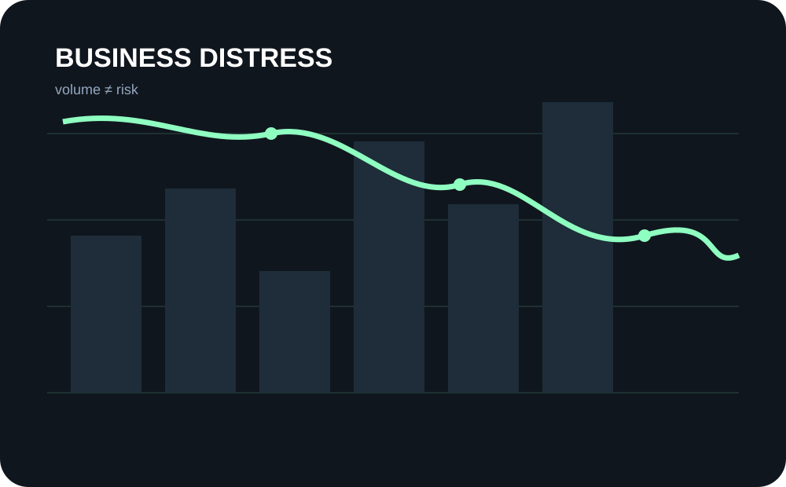

01 / FLAGSHIP
UK Business Distress Monitor
Where is corporate distress really concentrated — not just where raw failures are highest?
220,650 records272/272 industries validated3.56 baseline MAE
What looks like a simple insolvency count hides a harder question: which industries are genuinely under the most pressure once business population is considered? I combined Insolvency Service records with ONS business counts, validated the published totals before analysis, compared raw volume with population-adjusted risk, and tested forecasting models against a simple baseline.